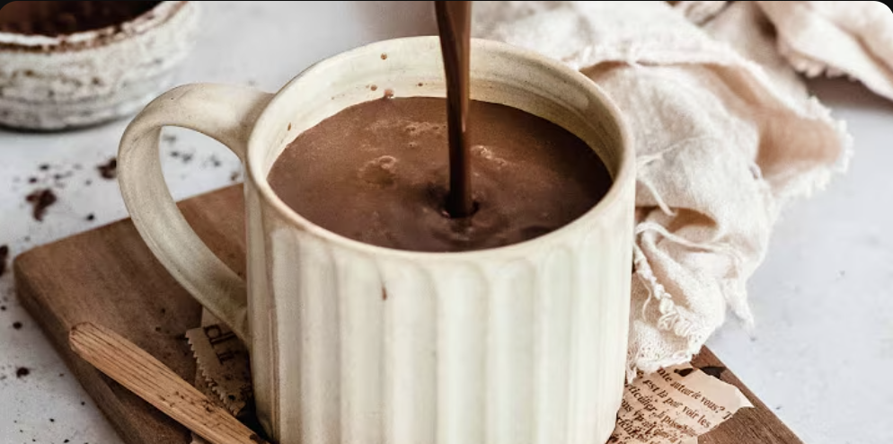

Home
Hot Chocolate with Dark Chocolate

Ingredients:
- Milk
- Dark Chocolate
- Cocoa Powder (optional)
- Sugar
Procedure:
- Take the milk in a saucepan and put it on high flame.
- Add some grated dark chocolate
- Stir for a minute or two.
- Now add some cocoa powder.
- Add some sugar depending on taste.
- Wait it the milk is almost about to boil; keep stirring.
- Turn off the flame. Your hot chocolate is ready to be served!